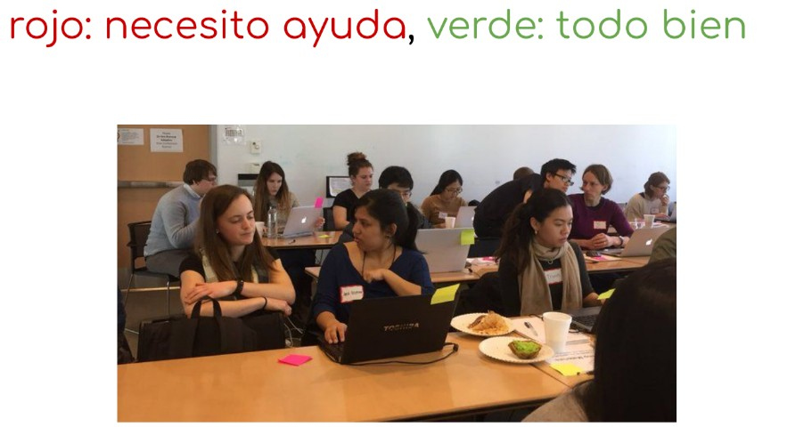
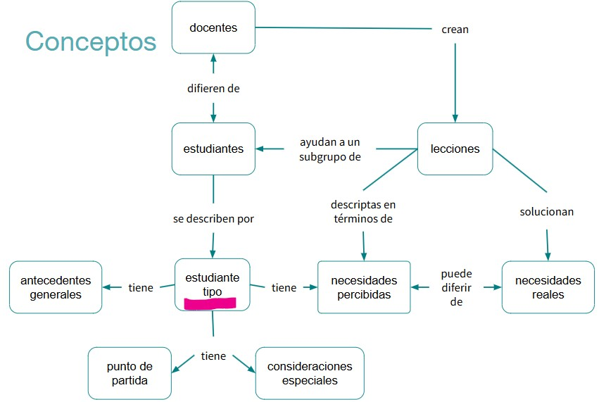

1 Dinámica de trabajo
Instructora: Evelia Coss
El programa “Train the Trainers” the CABANANet está diseñado para capacitar a personas que quieren convertirse en instructores certificados, enseñando talleres de ciencia de datos y programación reproducible.
1.0.1 Usaremos el Etherpad
vamos a realizar algunos ejercicios prácticos. Les pedimos que por favor tengan abierto el enlace del Etherpad correspondiente a nuestro entrenamiento. Ahí vamos a:
- ✍️ Escribir nuestras respuestas y reflexiones individuales o en grupo
- ✅ Registrar el progreso de los ejercicios
- 💬 Compartir ideas que surjan durante la discusión
⚠️ Recuerden que el Etherpad es una herramienta colaborativa en tiempo real, así que por favor no borren lo que otras personas hayan escrito. Si necesitan espacio, simplemente agreguen una nueva línea o usen su nombre para identificar sus notas.
1.0.2 Notas adhesivas
Entregamos a cada alumno dos notas adhesivas de distintos colores, por ejemplo, rojo y verde. Se pueden sostener para votar, pero su uso real es como banderas de estado. Si alguien ha terminado un ejercicio y quiere que lo revisen, pone la nota verde en su portátil; si se encuentra con un problema y necesita ayuda, pone la roja. Esto es mejor que hacer que la gente levante la mano porque:
- es más discreto (lo que significa que es más probable que realmente lo hagan),
- pueden seguir trabajando mientras su bandera está levantada, y
- el instructor puede ver rápidamente desde el frente de la sala en qué estado se encuentra la clase.
Idea principal:
Evitar lo teórico y generall en favor de lo práctico y específico.

2 Ronda de Presentaciones
3 Motivación
- Construir lecciones más efectivas
- Aplicando prácticas basadas en evidencia
- Con práctica y retroalimentación
- En un ambiente de aprendizaje positivo
- Conocer gente, compartir recursos ¡y divertirse!
4 Personas típicas
- Antecedentes generales
- Experiencia relevante
- Necesidades percibidas
- Consideraciones especiales
4.0.1 Ejemplo: Ana
Antecedentes
- Nacida y criada en Caracas
- Se mudó a Buenos Aires para hacer un doctorado en genética
- Le gusta el mate, pero aún no se acostumbra a tomarlo amargo
Punto de partida
- Analiza datos con Excel desde hace casi diez años
- Hizo un taller de un día intensivo de R en una conferencia
- Intentó aprender Git por su cuenta una vez, lo encontró frustrante
Necesidades
- Va a hacer 300 experimentos en los próximos seis meses
- No quiere hacer todos los análisis a mano
- Quiere mejores tablas para su tesis que las que puede hacer en Excel
Particularidades
- Muy incómoda hablando delante de un grupo
- Su computadora suele reiniciarse sola

Explica como puedes ayudarla
Este curso práctico de una semana está diseñado para introducirte al análisis de datos de manera sencilla y reproducible. Aprenderás a cargar, limpiar, explorar, visualizar y analizar datos organizados en tablas, utilizando herramientas accesibles y paso a paso.
4.1 Resumen

4.2 Referencias
- Instructor Trainer Training - informacion, presentacion Dia1
- CABANAnet + MetaDocencia: Curso Train the Trainer (Entrenamiento de Instructores) -pagina web, presentacion
- Enseñar tecnología en comunidad